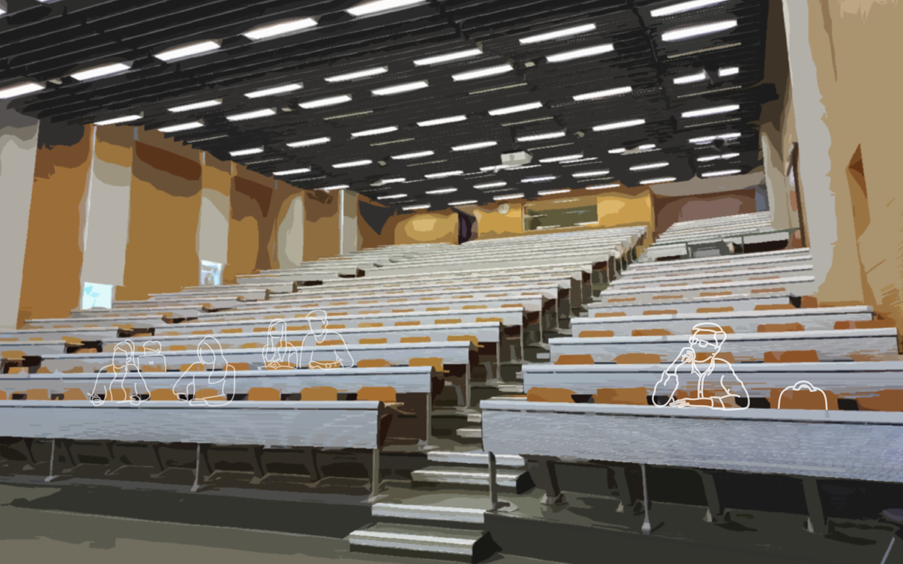
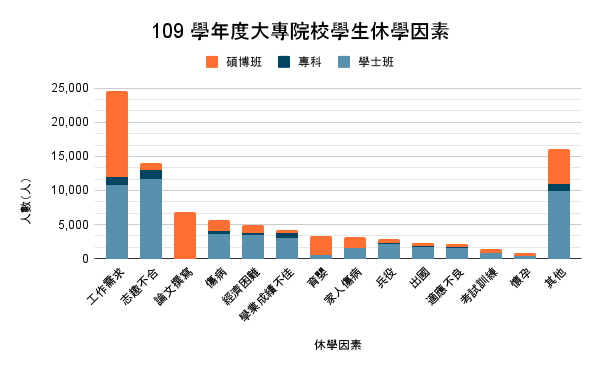

以下故事基於真實訪談內容改編。
我是以恩，高雄人，就讀文學院的科系。
在大二上因為課業、家庭等壓力而患上心理疾病，因此決定休學。
在休學半年後，雖然還是要靠吃藥輔助，但我的身心狀況漸漸改善。
現在學校註冊的日子也快到了，為了能趕快重新接觸人群，我正準備申請復學...
處理完租屋及選課的事情後，也迎來正式上課的日子。
但後來才發現，事情沒有我想像中容易...

大二的必修課程多半是延續大一學習的內容，但對於休學半年的我來說，我必須得惡補很多基礎知識才能勉強跟上，所以開學後的前幾次小考成績也都不太好。
我向老師說明我的情況，但老師考量到同學間的公平性，並不打算給予我特別幫助。
老師只叫我要自己多努力一點，或是明年再來修課。
但這堂必修課是許多課的先修科目，如果重修的話很可能會再多延畢一年。我原本想找同學幫忙補習，但因為在修課時程上落後半年，我們都修不同課也遇不到。
即使偶爾能跟同學碰面，也因為我錯過他們半年的人生經歷，許多話題跟不上，關係也逐漸疏遠。我的身心狀況又逐漸開始惡化...
但家人、系辦、老師及同學，似乎都預設「復學生」就與正常學生無異。
面對必須康復、正常的外界壓力，經常令我喘不過氣，也不知道可以向誰求助...
明明回來學校了，卻好像不屬於這裡...
休學現況
台灣大專院校每年的休學率約7%(9萬人)，其中約有3成左右(3萬人)會選擇重返校園。
因為心理疾病而休學的學生
復學申請通過後，第一個難關是宿舍申請問題。大多數學校要求復學生也要和其他在校生在同樣的時間申請宿舍，然而多數學校宿舍申請時間都相當早，因此當復學生確認自己的各方面狀況已經適合回到校園生活後，往往已經錯過宿舍申請時間。復學生 Dido（化名）提到，自己因為精神疾病休學後，期間情況有所起伏，「等我準備好要找宿舍的時候，發現我的天這要很久以前申請。我打電話去排候補，以自己的身分跟學校各個單位聯絡，但就是沒有人幫我。」後來他透過排候補抽到離主要校區較遠的宿舍，不過由於宿舍租約是以半年或一年為期，因此當時也很擔心若自己在學期間身心狀況再次惡化，必須再次申請退宿事宜，宿舍費用也可能沒辦法全額退款。
